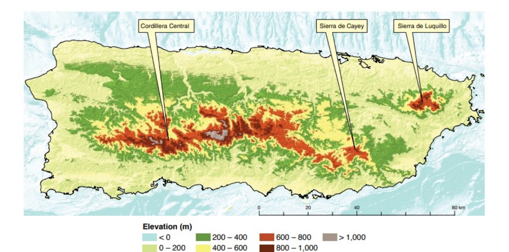
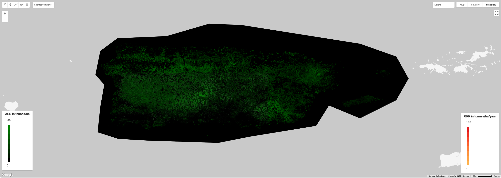
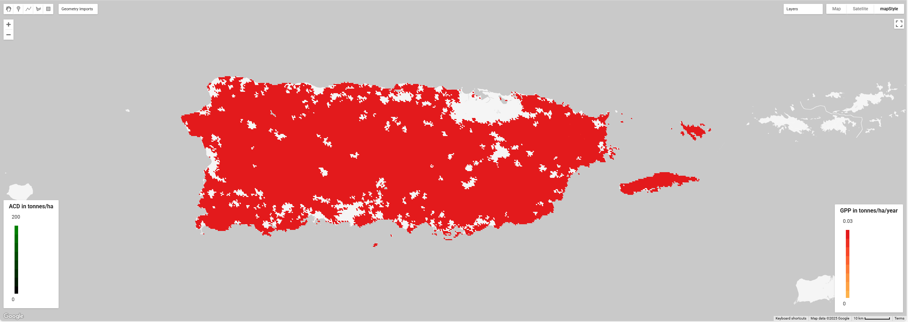

Carbon Sequestration

Earth Observation data can be used to calculate and plan carbon sequestration potential. Some key terms that are referred to in this assignment are the following:Gross primary production (GPP) = the total carbon fixed by photosynthesis per unit time, quantifies ecosystem carbon uptake potentialAboveground carbon density (ACD) = carbon mass stored in aboveground biomass (e.g., trees) per unit areaForest Cover (FC) = the spatial extent of tree-dominated land, often mapped through satellite imageryCarbon sequestration potential index (CSPI) = integrates ACD and GPP to rank land units by their potential to sequester carbon if afforestedMy region of interest (ROI) for this project is the Caribbean island of Puerto Rico. It is located in the Northeastern Caribbean Sea, north of the Virgin Islands and east of the Dominican Republic. The Puerto Rican terrain (fig. 1) is primarily mountainous with coastal plains, steep slopes, and sandy beaches. It includes the only tropical rainforest in the U.S. National Forest System (El Yunque) and a large cave system (Río Camuy). The climate is warm and humid with little seasonal temperature variation. Temperatures average between 24°C to 31°C in coastal areas and 23°C to 26°C in the mountains. Additionally, rainfall is generally abundant, averaging 157.5 cm annually, while humidity averages around 80%. The ROI is 1552173.916447721 (approximately 1552174) hectares according to the Google Earth Engine shape area calculator.The first map (fig. 2) shows the Aboveground Carbon Density (ACD) using a black to green color scale. In this case, black indicates low ACD and green indicates high ACD, therefore more vibrant green on the map indicates higher carbon density. This means that these areas are dense forests, which are better for long-term carbon storage. The second map (fig. 3) shows the Gross Primary Productivity (GPP) using a yellow to red color scale. In this case, yellow indicates low GPP while red indicates high GPP. Subsequently, red areas on the map exhibit faster plant growth or more productive ecosystems. Planners should prioritize conservation in areas where both ACD and GPP are high in order to balance long-term carbon storage, ecosystem productivity, and carbon sequestration rates. Based on this, the areas that should be focused on are the east-central regions where the green and red colors tend to overlap between the two maps.On the other hand, the areas that should be focused on for reforestation or afforestation purposes are the ones with low ACD but high GPP, meaning that plants grow well there, but lack density. These are the areas that are colored black or very dark green on the first map but red on the second map. Planners could focus on southern or peripheral regions for this purpose.
Fig 1: Puerto Rican terrain.
Fig 2: Puerto Rico ACD.
Fig 2: Puerto Rico GPP.